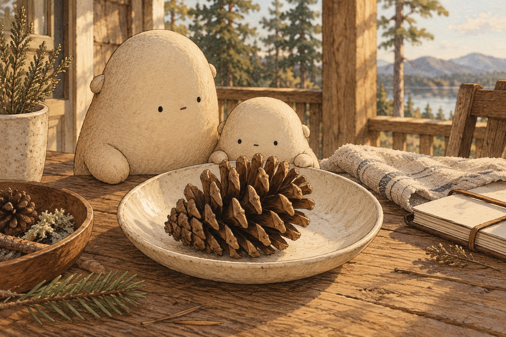
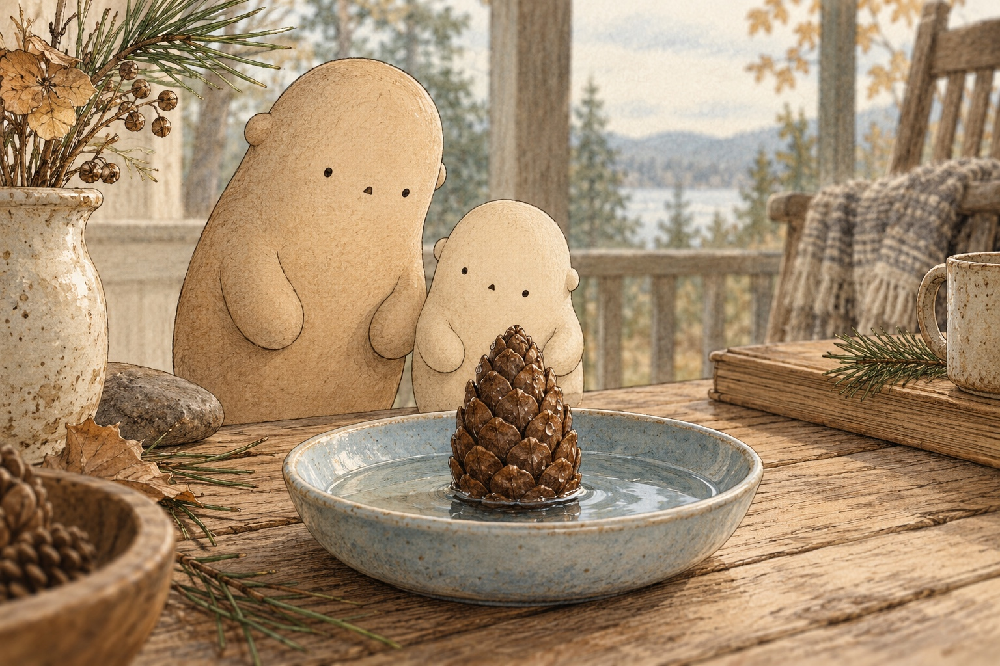
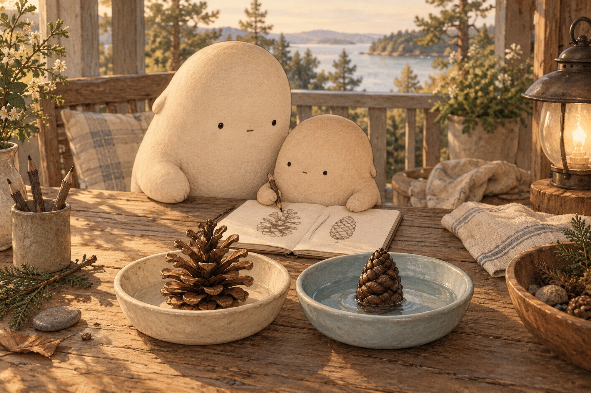

WONDER DAILY GRADE 3 · WRITING
A small change, in words
Pinecones · Curiosity day
Name __________________________ Date _______________
Give a clear command for watching a cone.



Draw an open cone beside a closed cone. Show the gaps between the scales.
pinecone · scale · dry · wet · open · close · seed · slowly
Watch … tell which cone to observe
Compare … tell which shapes to compare
Draw … tell which details to include
Does your command begin with an action word, such as Watch, Compare, or Draw?